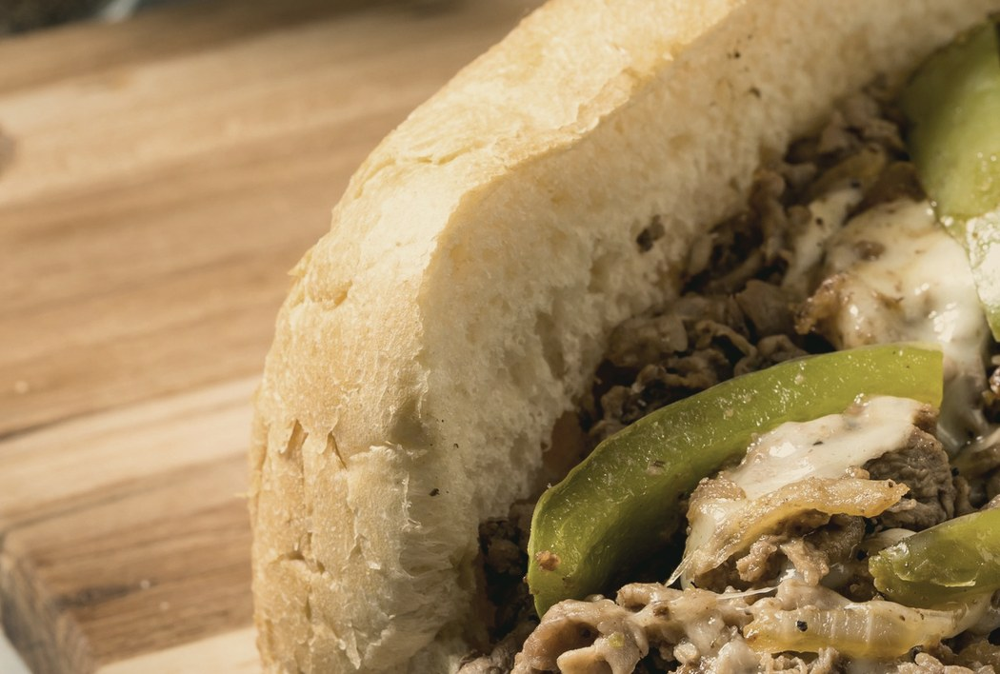
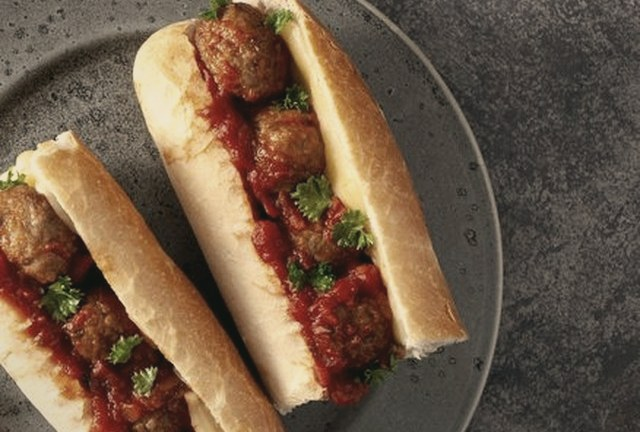
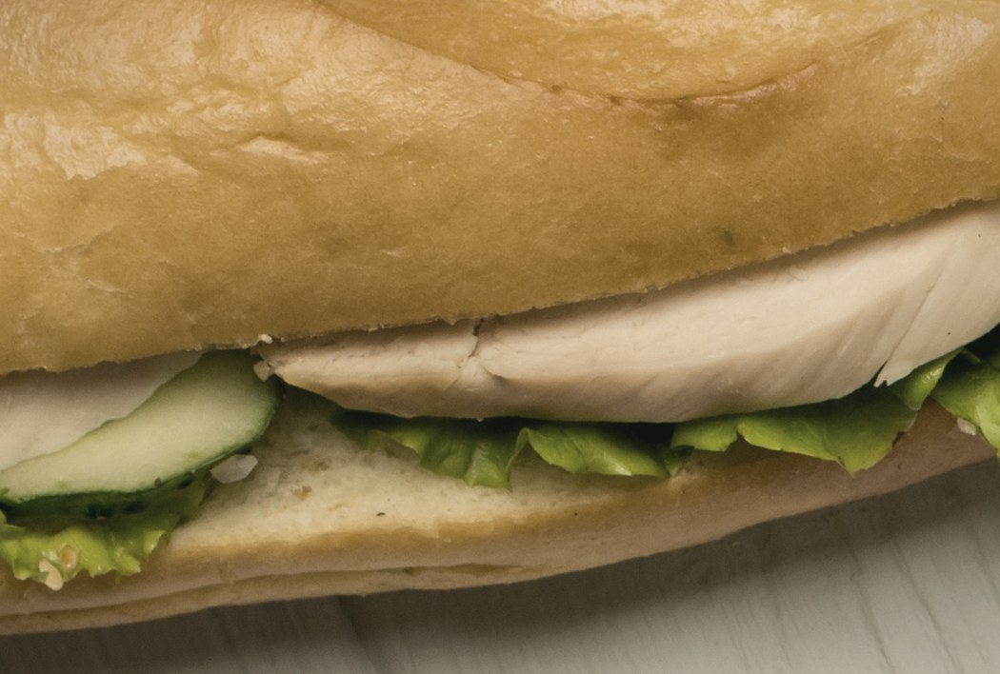
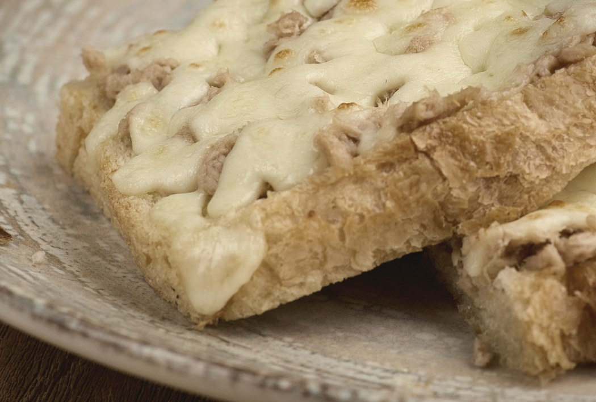
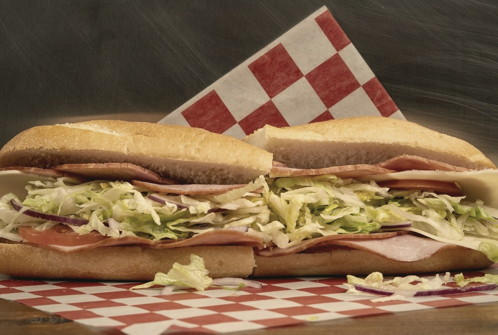
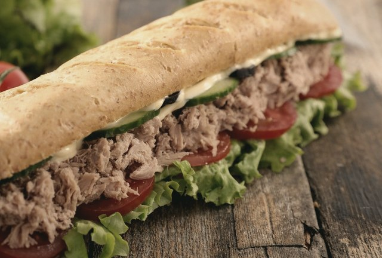
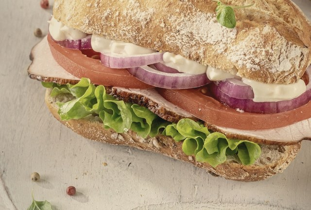

M15-0 · LA CARTA (cliente nuevo)
✕SNDWCH
Lado SANDO · ya está resuelto
La carta
Seis recetas cerradas. Toca una para verla entera.
★ La estrella

Philly Cheesesteakdesde S/22.90

Meatball Marinaradesde S/21.90

Turkeydesde S/23.90

Tuna Meltdesde S/22.90

Italian Hoagiedesde S/23.90

Classic Tunadesde S/20.90

🔒Menú secretoSe abre en tu 3er pedido